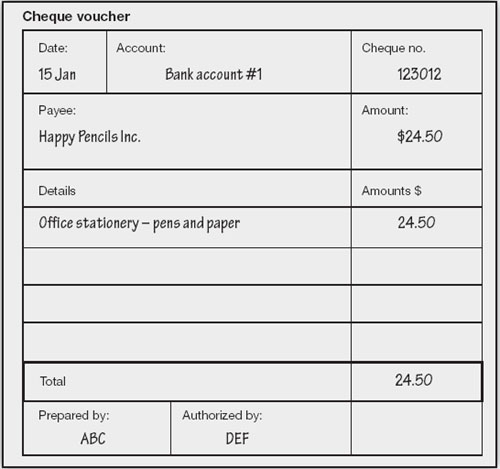

Suppose for the moment that you start a new business with a small number of clients who each pays you handsome fees – maybe for consulting services, software development or perhaps sculpturing. You will be quite busy enough without wanting to spend much time dealing with the rather important matter of keeping financial records. Here is a secret. The best way of ensuring that your records are accurate is to insist that every transaction passes through your bank account (even petty cash, of which more in the next chapter).
Every time you write a cheque or make a deposit, write the full details on a sheet of paper – pre-printed vouchers are available for this – staple any supporting documents to it, and drop it in a shoebox. Auditors, who delight in watching over your financial well being, prefer the vouchers to be pre-numbered consecutively. Any spoiled vouchers or spoiled cheques should be cancelled and retained so there can be no dispute over their fate. Once you get beyond being the only employee, you should require two signatures on all cheques and appoint someone to review and authorize the vouchers.
Many new or small business owners give the contents of this shoebox to their tame beanies once a week and let the pros worry about posting records, processing salaries, paying tax, and so on. If you want to stay on top of your finances, you might want to get hold of an accounting system for your PC and keep your own records, even if you still pass on the shoebox and let your accountant handle all the nasty, fiddly stuff.

If you are going to keep your own financial records, you need a software accounting system. Today’s lower-end packages offer big-company functionality for just a few hundred dollars. Do not make the mistake of buying a specific package because your bean counter uses it. I know an entrepreneur who did, and ended up with a totally incomprehensible white elephant. Financial bods operate in a different universe. Anyway, if you later engage a new accountant, are you going to switch software as well?
When making a selection, be guided by reviews (e.g. on the Internet). There are many systems from which to choose. Peachtree seems to be a favourite of many accountants, QuickBooks claims the largest market share, while I admit a personal preference for MYOB.
Most of the popular packages are surprisingly easy to use and lead you through the bookkeeping process fairly painlessly. With such software the production of financial statements is a breeze – and you have the added bonus that you can also use it for other finance-related tasks such as payroll, invoicing and inventory management.
Perhaps the hardest part is getting started. When you first install and use an accounting package, it will ask you to make choices which may appear baffling. Here are some hints about the four tricky options:
Chart of accounts. You will have to select a chart of accounts (discussed next). Accounting packages come with dozens of charts tailored for various businesses (hairdressers, bricklayers, genetic engineering). The choice can be bewildering. Do not worry. Just select one close to your type of business. Eventually, you will find that you have deleted most predefined accounts and added many new ones.
Allow changes. You will be asked if you want to allow changes. Strictly speaking, accounting entries should never be amended directly. Auditors are allergic to that white correction fluid. If an error is discovered, the original transaction should be reversed by posting a second transaction which is the exact opposite of the incorrect one, and then the correct details should be posted as a third transaction. In fact (don’t tell your accountant that I said this), if you are the only person using the accounting package, you will want to be able to totally erase silly mistakes. Accordingly, initially, set up the system to allow changes. As soon as you are comfortable with the system, switch off this option.
Financial year. The system will want to know your financial or fiscal year (accounting period). This will probably be the calendar year or maybe your tax year. It is rarely the 12 months commencing on the date on which you started business. Financial years are usually determined by tax considerations.
Conversion date. The final difficult question will be ‘what is your conversion date?’ This is simply the date on which you convert from your previous accounting system to the new one. If you are dealing with a new business, the conversion date is the first day of the first month in which you want to start keeping records.